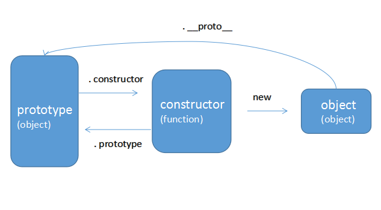

到目前为止，我们看到的大多数引用类型值都是 Object 类型的实例；而且， Object 也是 ECMAScript 中使用最多的一个类型。虽然 Object 的实例不具备多少功能，但对于在应用程序中存储 和传输数据而言，它们确实是非常理想的选择。
继承的基本思想:利用原型让一个引用类型继承另一个引用类型的属性和方法.
每个构造函数都有一个原型对象，原型对象都包含一个指向构造函数的指针，而实例都包含一个指向原型 对象的内部指针。
当我们创建一个函数，系统就会为这个函数自动分配一个prototype指针，指向它的原型对象。并且可以发现， 这个原型对象包含两个部分（constructor 和 __proto__）其中constructor指向函数自身。 （这里形成了一个小闭环）
当我们将该函数作为模版创建实例（new方法）的时候，我们发现创建出的实例是一个与构造函数同名的object， 这个object是独立的，他只包含了一个__proto__指针（实例没有prototype，强行访问则会输出undefined）， 这个指针指向上面提到的构造函数的prototype原型对象。
这时候我们发现三者形成了一个大"闭环"。之所以加上引号，因为构造函数和实例之间无法直接访问， 需要通过__proto__指针间接读取。
